同一 query，不同 reference：18 个真实案例
14 张药盒来自历史 EVAL128 的 ORIGINAL7：全部 12 次纠错、1 次误改和 1 次未纠正。另补 4 张 RPC600 的固定 full-H593 COST1 案例：3 次纠错、1 次误改。两套模型和面板分别标明。
热图直接读取已验证缓存，保留原 token 网格，统一使用 0–1 色标；reference 缩略图为实际输入。S 为加权内容分数，M = sqrt(mean(wq) × mean(wr))。最终动作还使用其他证据，不能凭热图亮度或 S 单项代替模型决策。
选图为事后讲解，不估计成功率。网格不是分割，也不是 ownership 证据；本次没有训练或模型推理。
下载完整 18 页 PDF · 统计表 CSV · 总览图
OUTCOME-0444 · 成功纠错 · ORIGINAL7
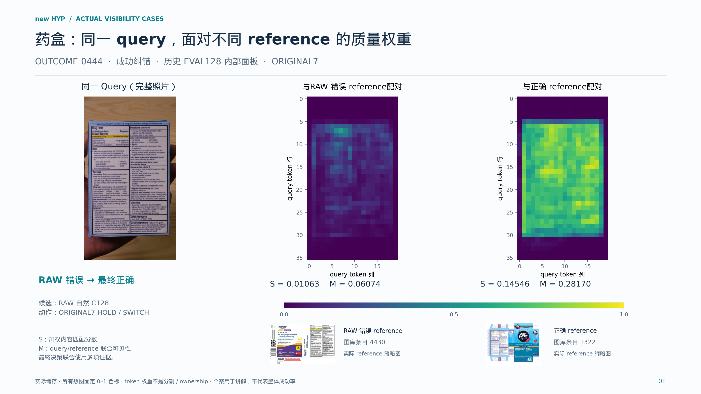
高清 PNG · PDF · SVG · 原照片：query / 错误 reference / 正确 reference · 数值与来源
DIFFICULT-0016 · 成功纠错 · ORIGINAL7
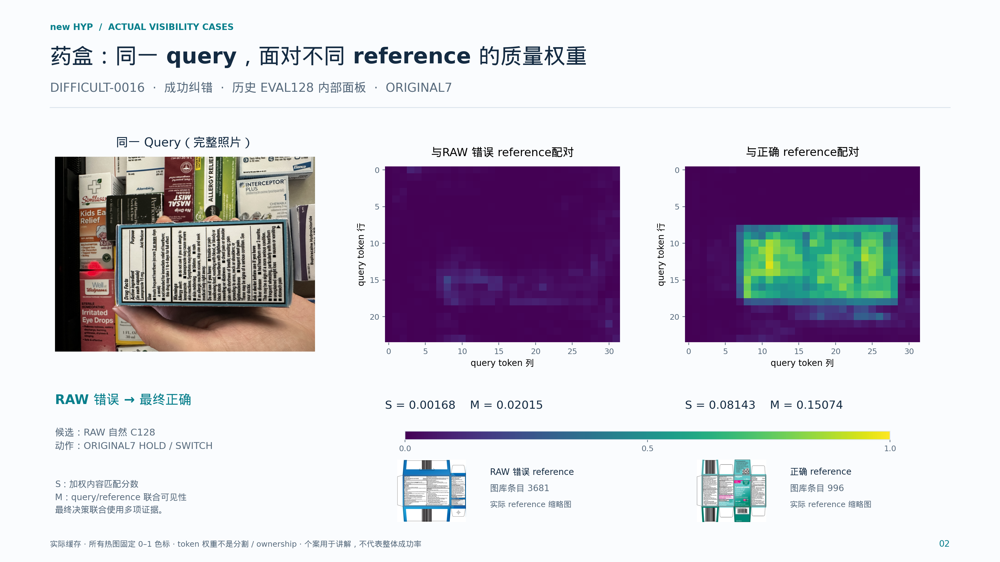
高清 PNG · PDF · SVG · 原照片：query / 错误 reference / 正确 reference · 数值与来源
OUTCOME-0603 · 成功纠错 · ORIGINAL7
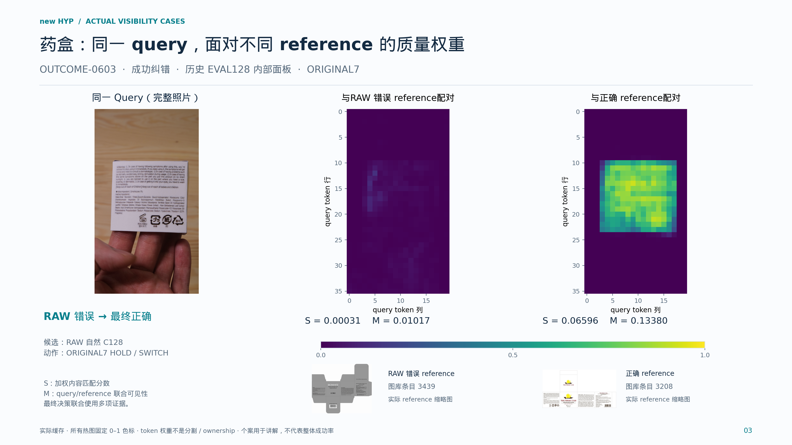
高清 PNG · PDF · SVG · 原照片：query / 错误 reference / 正确 reference · 数值与来源
OUTCOME-0140 · 成功纠错 · ORIGINAL7
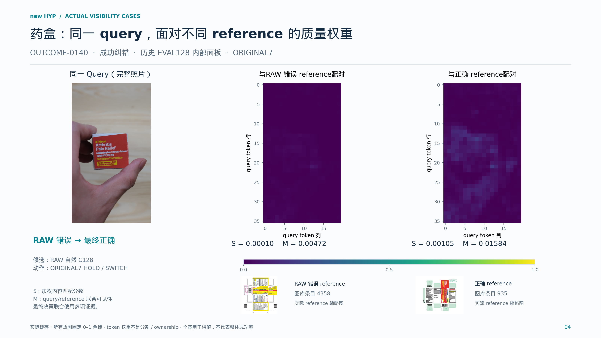
高清 PNG · PDF · SVG · 原照片：query / 错误 reference / 正确 reference · 数值与来源
OUTCOME-0600 · 成功纠错 · ORIGINAL7
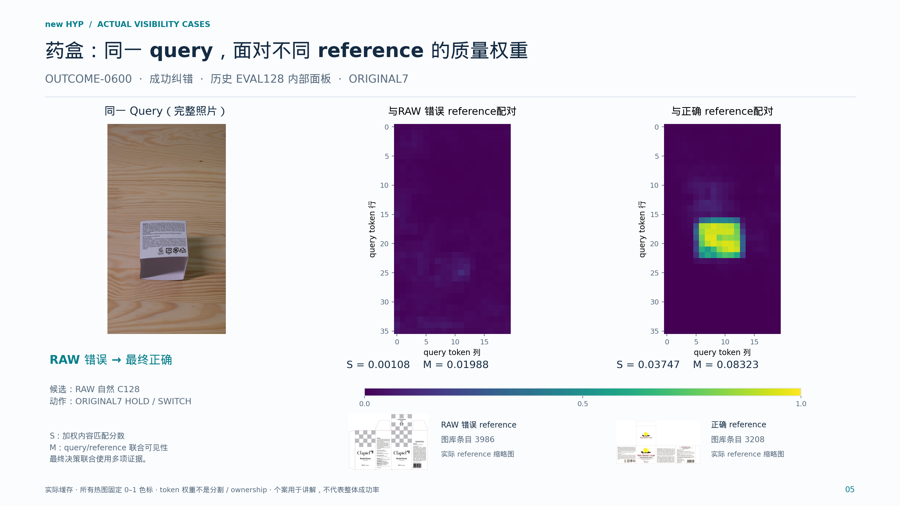
高清 PNG · PDF · SVG · 原照片：query / 错误 reference / 正确 reference · 数值与来源
OUTCOME-0438 · 成功纠错 · ORIGINAL7
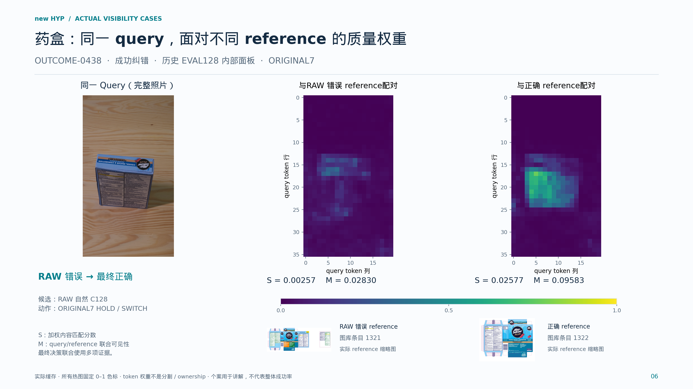
高清 PNG · PDF · SVG · 原照片：query / 错误 reference / 正确 reference · 数值与来源
DIFFICULT-0017 · 成功纠错 · ORIGINAL7
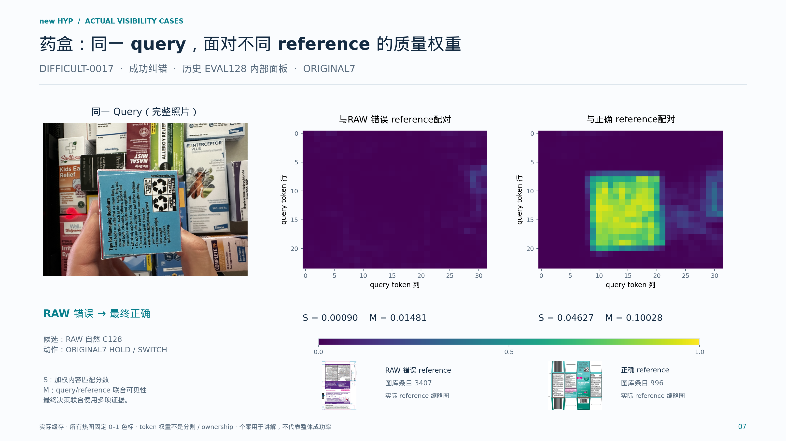
高清 PNG · PDF · SVG · 原照片：query / 错误 reference / 正确 reference · 数值与来源
OUTCOME-0333 · 成功纠错 · ORIGINAL7
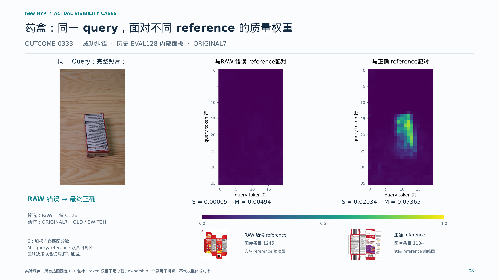
高清 PNG · PDF · SVG · 原照片：query / 错误 reference / 正确 reference · 数值与来源
DIFFICULT-0014 · 成功纠错 · ORIGINAL7
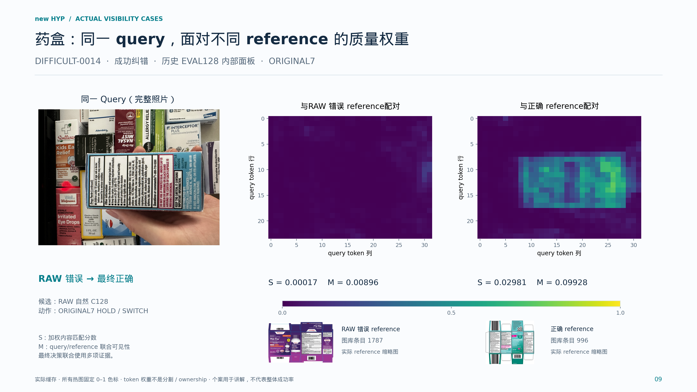
高清 PNG · PDF · SVG · 原照片：query / 错误 reference / 正确 reference · 数值与来源
OUTCOME-0605 · 成功纠错 · ORIGINAL7
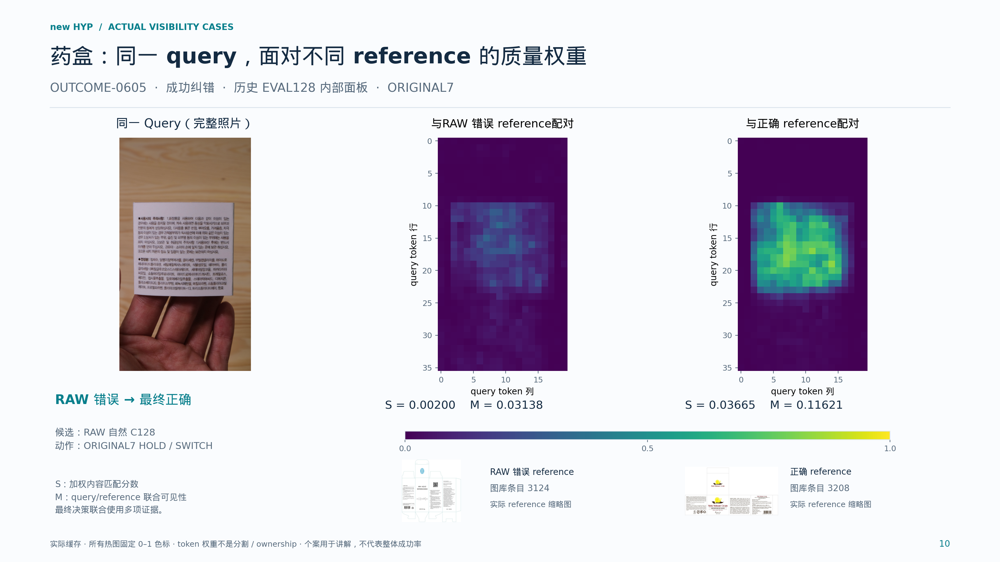
高清 PNG · PDF · SVG · 原照片：query / 错误 reference / 正确 reference · 数值与来源
OUTCOME-0345 · 成功纠错 · ORIGINAL7
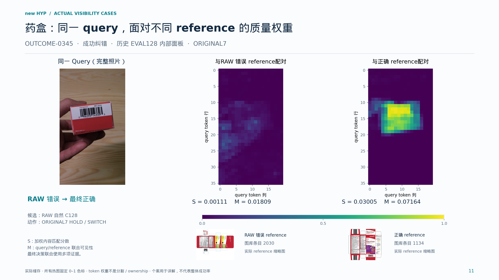
高清 PNG · PDF · SVG · 原照片：query / 错误 reference / 正确 reference · 数值与来源
OUTCOME-0439 · 成功纠错 · ORIGINAL7
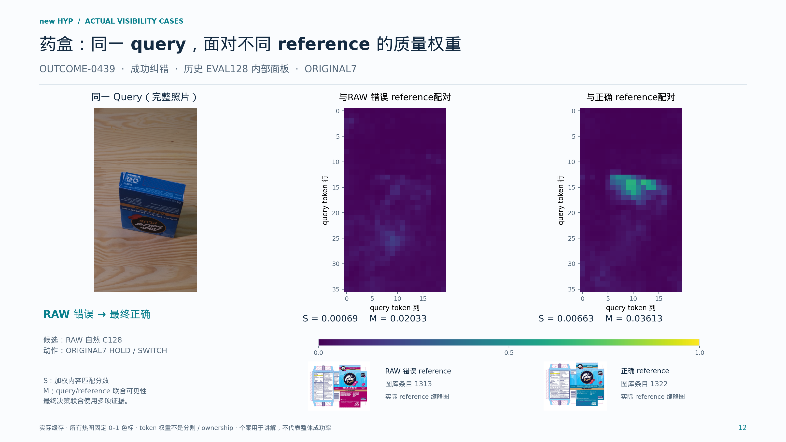
高清 PNG · PDF · SVG · 原照片：query / 错误 reference / 正确 reference · 数值与来源
OUTCOME-0337 · 误改案例 · ORIGINAL7
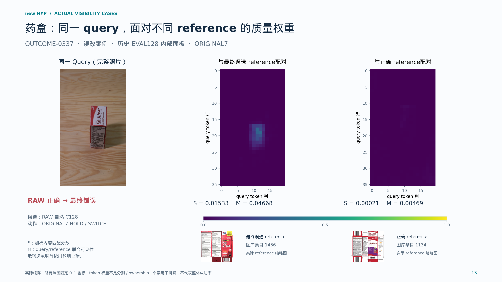
高清 PNG · PDF · SVG · 原照片：query / 错误 reference / 正确 reference · 数值与来源
OUTCOME-0446 · 尚未纠正 · ORIGINAL7
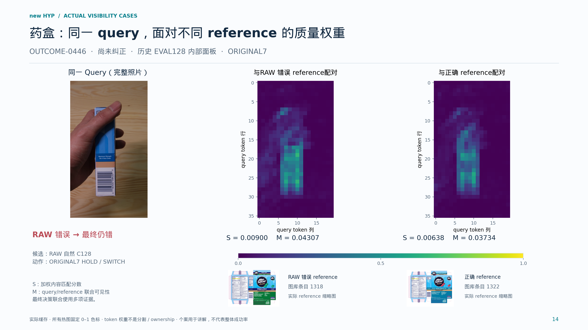
高清 PNG · PDF · SVG · 原照片：query / 错误 reference / 正确 reference · 数值与来源
RPC-Q-0041 · 成功纠错 · COST1
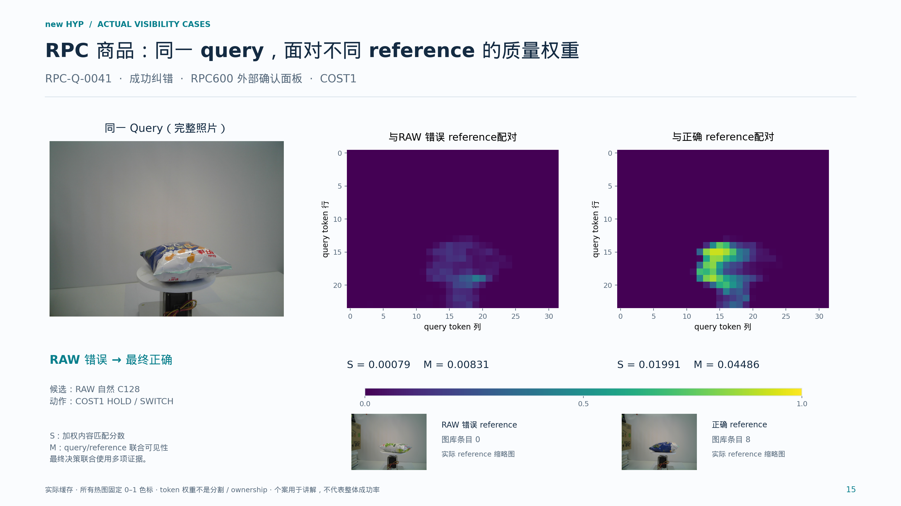
高清 PNG · PDF · SVG · 原照片：query / 错误 reference / 正确 reference · 数值与来源
RPC-Q-0051 · 成功纠错 · COST1
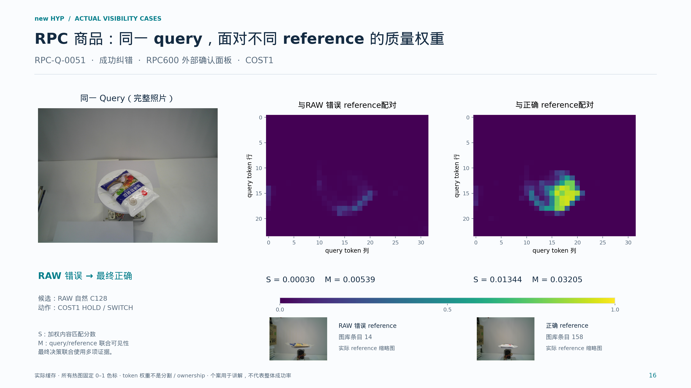
高清 PNG · PDF · SVG · 原照片：query / 错误 reference / 正确 reference · 数值与来源
RPC-Q-0067 · 成功纠错 · COST1
高清 PNG · PDF · SVG · 原照片：query / 错误 reference / 正确 reference · 数值与来源
RPC-Q-0361 · 误改案例 · COST1
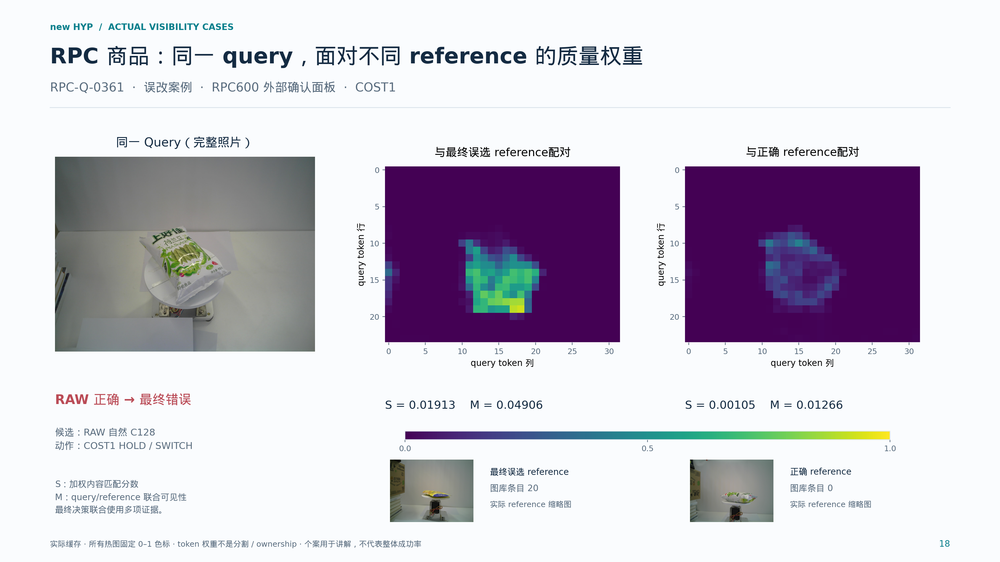
高清 PNG · PDF · SVG · 原照片：query / 错误 reference / 正确 reference · 数值与来源